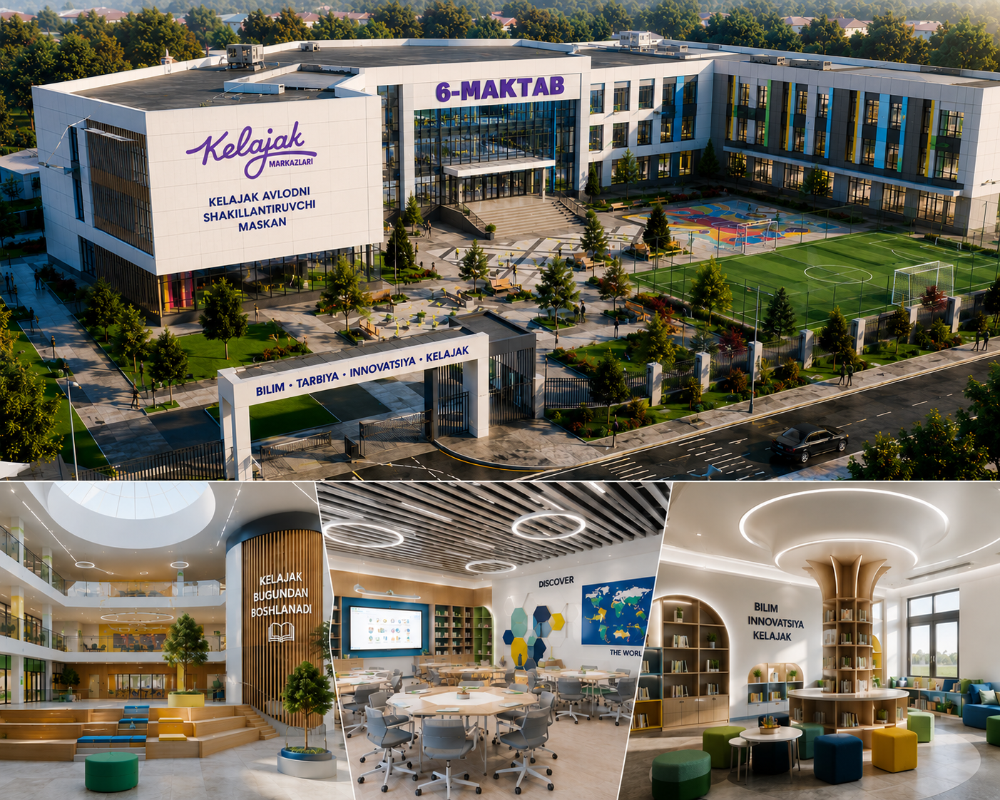
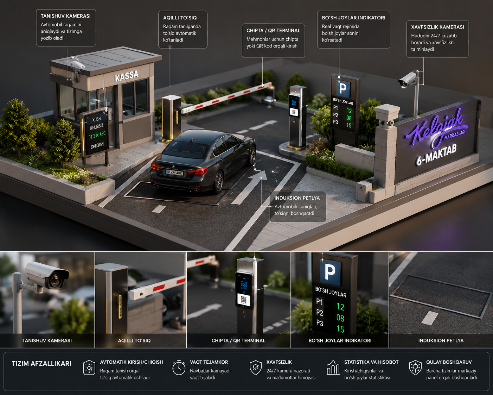

6-MAKTAB INTERFAOL TA'LIM PORTALI
STEM, Virtual Reallik hamda Sun'iy intellekt ekotizimiga ega zamonaviy bilim maskani

Maktabimizda 80 nafardan ortiq yuqori malakali pedagoglar faoliyat yuritadi, ulardan 22 nafari oliy toifali, 21 nafari esa xalqaro va milliy sertifikatlarga ega.
KELAJAK AVLODNI SHAKILLANTIRISH MASKANI
6-sonli umumta'lim maktabi ilg'or STEM laboratoriyalari va zamonaviy AKT infratuzilmasiga ega bo'lgan innovatsion ta'lim muassasasidir. O'tgan o'quv yilida bitiruvchilarimizning 71%i oliy ta'lim muassasalariga grant asosida qabul qilindi. Har bir sinf xonasi interaktiv sensorli doskalar bilan ta'minlangan.
MAKTABIMIZNING ZAMONAVIY IMKONIYATLARI
Batafsil ma'lumot va jonli interaktiv videoni ko'rish uchun kartalardan birini bosing
STEM va Robototexnika
O'quvchilarimiz darsdan tashqari vaqtlarda zamonaviy sensorlar va platalar yordamida o'z robotlarini dasturlashni o'rganadilar.
VR (Virtual reallik) Laboratoriyasi
Kimyo, biologiya va astronomiya darslari maxsus VR ko'zoynaklar yordamida interaktiv o'tiladi.
Professional IT va Dasturlash
Maktabimiz qoshidagi IT-Klubda o'quvchilar Python hamda mukammal Veb-dizayn yo'nalishlarini o'rganishadi.
Smart Face ID va Xavfsizlik
Maktabga kirish-chiqish to'liq Face ID (yuzni tanish) tizimi orqali avtomatlashtirilgan.
Robototexnika va STEM markazi
Bu yerda g'oyalar haqiqiy robotlarga aylanadi
1-BOSQICH: Sxemotexnika — bu elektron qurilmalar va elektr tizimlarining sxemalarini yaratish, tahlil qilish va ishlash prinsiplarini o‘rganadigan fan. Bu yo‘nalish orqali aqlli qurilmalar, robotlar, avtomatik boshqaruv tizimlari va “aqlli mashinalar” yaratiladi. Sxemotexnikaning asosiy vazifalari Elektr signallarini boshqarish Qurilmalarni avtomatik ishlatish Sensorlardan ma’lumot olish Dvigatellarni boshqarish Aqlli tizim yaratish Robototexnika asoslarini qurish Asosiy elementlar 1. Rezistor Tok kuchini kamaytiradi. 2. Kondensator Elektr energiyasini vaqtincha saqlaydi. 3. Diod Tokni bir tomonga o‘tkazadi. 4. Tranzistor Elektr signalini kuchaytiradi yoki boshqaradi. 5. Mikrokontroller Qurilmaning “miyasi”. Masalan: Arduino ESP32 Raspberry Pi 6. Sensorlar Atrof-muhitni sezadi: Ultrasonik sensor Infraqizil sensor Harorat sensori Gaz sensori Aqlli To‘siqlardan Qochuvchi Mashina ishlash prinsipi Ishlash jarayoni: Sensor oldidagi to‘siqni sezadi Ma’lumot Arduino ga uzatiladi Arduino motorlarga buyruq beradi Mashina yo‘nalishni o‘zgartiradi To‘siqdan qochadi Kerak bo‘ladigan qismlar Arduino UNO Ultrasonik sensor HC-SR04 Servo motor DC motor Motor Driver L298N Batareya G‘ildiraklar Shassi Simlar Ultrasonik sensor formulasi Masofa aniqlash formulasi: d= 2 v×t Bu yerda: d — masofa v — tovush tezligi t — vaqt Sxemotexnikaning zamonaviy yo‘nalishlari Robototexnika Sun’iy intellekt IoT (Internet of Things) Smart Home Dron texnologiyalari Avtomatlashtirish Elektr transport O‘rganish uchun dasturlar Arduino IDE Proteus Tinkercad Fritzing KiCad Kelajakdagi kasblar Sxemotexnika orqali quyidagi kasblarni egallash mumkin: Robototexnik muhandis Elektronika muhandisi IoT dasturchi Avtomatika mutaxassisi AI Hardware Engineer Embedded Systems Developer Muhim tavsiya Agar o‘quvchilar uchun loyiha qilmoqchi bo‘lsangiz: oddiy LED sxemalardan boshlang, keyin sensorlar, undan so‘ng Arduino, oxirida robot va aqlli mashinalarga o‘ting. Shunda o‘quvchilar juda tez qiziqib ketadi va amaliy natija ko‘ra boshlaydi. 🚀
LDR, PIR, LM35 datchiklari va mantiqiy elektronika qonuniyatlarini o'rganish.
2-BOSQICH: Mikrokontrollerlar (Arduino) Mikrokontroller nima? Mikrokontroller — bu kichik hajmdagi “mini kompyuter” bo‘lib, elektron qurilmalarni boshqarish uchun ishlatiladi. Uning ichida: protsessor, xotira, kirish-chiqish portlari, va boshqaruv tizimi mavjud bo‘ladi. Oddiy qilib aytganda: 👉 Mikrokontroller — aqlli qurilmaning miyasi. Arduino nima? Arduino — mikrokontroller asosida yaratilgan ochiq platforma bo‘lib, robotlar, aqlli uy tizimlari, avtomatika va turli elektron loyihalarni yaratishda ishlatiladi. Arduino: oson dasturlanadi, yangi boshlovchilar uchun qulay, juda ko‘p sensorlar bilan ishlaydi, robototexnikaning eng mashhur platformalaridan biri hisoblanadi. Arduino qanday ishlaydi? Arduino ishlash jarayoni: 1. Sensor ma’lumot oladi Masalan: masofa, harorat, yorug‘lik, harakat. 2. Arduino ma’lumotni qayta ishlaydi Kod asosida qaror qabul qiladi. 3. Qurilmaga buyruq beradi Masalan: motorni aylantiradi, LED yoqadi, signal chiqaradi. Arduino qismlari Asosiy elementlari: 1. USB Port Kompyuterga ulash uchun. 2. Mikrokontroller chip Asosiy boshqaruv qismi. 3. Digital Pinlar 0 va 1 signallar bilan ishlaydi. 4. Analog Pinlar Turli sensor qiymatlarini o‘qiydi. 5. Power Pin Elektr quvvati beradi. Eng mashhur Arduino turlari Arduino UNO Boshlovchilar uchun eng yaxshi variant. Arduino Nano Kichik loyihalar uchun. Arduino Mega Ko‘p sensorli katta loyihalar uchun. ESP32 Wi-Fi va Bluetooth bilan ishlaydi. Arduino bilan nimalar qilish mumkin? Aqlli mashina Robot qo‘l Smart Home Aqlli issiqxona Dron Signalizatsiya Yuzni aniqlash Avtomatik eshik Aqlli sug‘orish tizimi Arduino dasturlash tili Arduino C/C++ asosida ishlaydi. Misol: int led = 13; void setup() { pinMode(led, OUTPUT); } void loop() { digitalWrite(led, HIGH); delay(1000); digitalWrite(led, LOW); delay(1000); } Bu kod LED lampani yoqib-o‘chiradi. Arduino uchun kerakli dasturlar Arduino IDE Rasmiy dasturlash muhiti. Tinkercad Virtual sxema yaratish. Proteus Professional simulyatsiya. Sensorlar bilan ishlash Ultrasonik sensor Masofani o‘lchaydi. Masofa formulasi: d= 2 v×t Harorat sensori Temperaturani o‘lchaydi. Infraqizil sensor To‘siqni sezadi. Gaz sensori Gaz chiqishini aniqlaydi. Arduino loyihalari bosqichlari Boshlang‘ich LED yoqish Tugma ulash Buzzer ishlatish O‘rta daraja Sensorlar LCD ekran Servo motor Professional Robototexnika IoT tizimlari Sun’iy intellekt qurilmalari Arduino o‘rganishning foydalari ✅ Texnik fikrlashni rivojlantiradi ✅ Dasturlashni o‘rgatadi ✅ Robototexnikaga kirish beradi ✅ Kelajak kasblariga tayyorlaydi ✅ Startap yaratishga yordam beradi Kelajakdagi kasblar Arduino va mikrokontrollerlarni bilgan o‘quvchi: Robototexnik muhandis Elektronika muhandisi IoT Developer Embedded Engineer AI Hardware Developer Avtomatika mutaxassisi bo‘lishi mumkin. Muhim tavsiya O‘quvchilar uchun: LED loyihadan boshlang Sensorlarga o‘ting Arduino bilan mashina yarating Robototexnika musobaqalarida qatnashing Shunda o‘quvchilar texnologiyaga juda tez qiziqib ketadi. 🚀
C++ tilida ATmega328P kontrollerini dasturlash va murakkab algoritmlar yozish.
3-BOSQICH: 3D Modellashtirish 3D Modellashtirish nima? 3D Modellashtirish — bu kompyuter orqali uch o‘lchamli obyektlar yaratish jarayoni. Bu texnologiya yordamida: binolar, robotlar, avtomobillar, o‘yin qahramonlari, texnika, animatsiyalar, va sun’iy dunyolar yaratiladi. Oddiy qilib aytganda: 👉 3D modellashtirish — virtual obyektlarni haqiqiydek yaratish san’ati va texnologiyasi. 3D modelning 3 ta asosiy o‘lchami 3D obyekt quyidagi koordinatalarda yaratiladi: X — uzunlik Y — kenglik Z — balandlik Koordinata formulasi: P(x,y,z) Bu formulada obyektning fazodagi joylashuvi aniqlanadi. 3D Modellashtirish qayerlarda ishlatiladi? 1. Arxitektura Zamonaviy maktablar Binolar Shahar loyihalari 2. O‘yin sanoati GTA Minecraft PUBG Roblox 3. Kino va animatsiya Marvel filmlari Pixar animatsiyalari 4. Robototexnika Aqlli robotlar Mexanik tizimlar 5. Tibbiyot Sun’iy organlar Jarrohlik simulyatsiyasi 6. Sanoat Zavod uskunalari Avtomobil dizayni 3D Modellashtirish bosqichlari 1. Modeling Obyekt shakli yaratiladi. 2. Texturing Rang va material beriladi. 3. Lighting Yorug‘lik qo‘shiladi. 4. Rendering Yakuniy realistik rasm olinadi. 5. Animation Harakatlantirish amalga oshiriladi. Eng mashhur 3D dasturlar Blender Bepul va professional dastur. Autodesk Maya Animatsiya va kino uchun. 3ds Max Arxitektura va interyer uchun. SketchUp Boshlovchilar uchun qulay. Cinema 4D Motion grafikalar uchun. 3D Modellashtirishning matematik asosi 3D grafika matematik formulalar asosida ishlaydi. Masalan aylantirish formulasi: x ′ =xcosθ−ysinθ Bu formula obyektni aylantirish uchun ishlatiladi. Rendering nima? Rendering — bu 3D modelni real rasm yoki videoga aylantirish jarayoni. Render vaqtida: yorug‘lik, soya, material, kamera, effektlar hisoblanadi. Zamonaviy texnologiyalar AI + 3D Sun’iy intellekt yordamida avtomatik model yaratish. VR (Virtual Reality) Virtual olam yaratish. AR (Augmented Reality) Telefon orqali 3D obyektni ko‘rsatish. Metaverse Virtual dunyo yaratish. 3D Modellashtirish o‘rganishning foydalari ✅ Kreativ fikrlash rivojlanadi ✅ Dizayn ko‘nikmasi oshadi ✅ Robototexnika bilan bog‘lanadi ✅ Yuqori daromadli kasb beradi ✅ Freelance ishlash imkonini beradi Kelajak kasblari 3D yo‘nalishida: 3D Artist Game Designer Animator CGI Specialist VFX Artist Industrial Designer Architect Visualizer kasblarini egallash mumkin. Kuchli faktlar va ishonchli dalillar 1. Marvel va Pixar filmlari Barcha zamonaviy filmlar 3D texnologiya asosida yaratiladi. 2. Tesla va BMW Avtomobil dizaynlarini oldin 3D formatda ishlab chiqadi. 3. NASA Kosmik qurilmalarni 3D simulyatsiya qiladi. 4. Qurilish kompaniyalari Binolar qurilishidan oldin 3D loyiha yaratadi. 5. Tibbiyot 3D printer orqali sun’iy protezlar chiqariladi. O‘quvchilar uchun loyiha g‘oyalari 3D maktab modeli Aqlli uy Robot dizayni Kelajak shahri Futuristik avtomobil Dron modeli Boshlash uchun tavsiya Agar o‘quvchilarga o‘rgatmoqchi bo‘lsangiz: SketchUp bilan boshlang Blender ga o‘ting 3D animatsiya yarating Keyin robototexnika bilan bog‘lang Shunda o‘quvchilar texnologiya va dizaynni birgalikda o‘rganadi. 🚀
Robot korpuslarini 3D printerlar uchun Tinkercad va Fusion 360 dasturlarida loyihalash.

Obstacle Avoiding Robot
Avtonom boshqaruvUshbu aqlli mashina **HC-SR04** ultra-tovushli sensori orqali 2-400 sm masofadagi to'siqlarni aniqlaydi va Servo-motor yordamida harakat yo'nalishini sekundiga 16 marta yangilab turadi. Obstacle Avoiding Robot nima? Obstacle Avoiding Robot — bu oldidagi to‘siqlarni aniqlab, ulardan avtomatik ravishda qochadigan aqlli robotdir. Oddiy qilib aytganda: 👉 Bu robot o‘zi “ko‘radi”, “o‘ylaydi” va “harakat qiladi”. U robototexnika va sun’iy intellektning eng mashhur boshlang‘ich loyihalaridan biri hisoblanadi. Robot qanday ishlaydi? Robotning ishlash bosqichlari: 1. Sensor to‘siqni aniqlaydi Ultrasonik sensor masofani o‘lchaydi. 2. Mikrokontroller qaror qabul qiladi Arduino ma’lumotni qayta ishlaydi. 3. Motorlar yo‘nalishni o‘zgartiradi Robot chapga yoki o‘ngga buriladi. Masofa aniqlash formulasi Ultrasonik sensor quyidagi formula orqali ishlaydi: d= 2 v×t Bu yerda: d — masofa v — tovush tezligi t — signal qaytish vaqti Robotning asosiy qismlari 1. Arduino Robotning boshqaruv markazi. 2. Ultrasonik sensor HC-SR04 To‘siqlarni aniqlaydi. 3. Motor Driver L298N Motorlarni boshqaradi. 4. DC Motor Robotni harakatlantiradi. 5. Servo Motor Sensorni aylantiradi. 6. Batareya Energiya manbai. Robotning ishlash algoritmi Oldinga yur → To‘siqni tekshir → Agar to‘siq bo‘lsa → Chap va o‘ngni tekshir → Bo‘sh tomonga buril → Harakatni davom ettir Qiziqarli faktlar 1. NASA robotlari Kosmik robotlar ham to‘siqlardan qochish texnologiyasidan foydalanadi. 2. Tesla avtomobillari Avtopilot tizimi obstacle detection texnologiyasiga asoslangan. 3. Zamonaviy dronlar To‘qnashuvni oldini olish uchun sensorlardan foydalanadi. 4. Robot changyutgichlar Masalan iRobot ning robotlari ham shu texnologiyada ishlaydi. Robototexnikadagi eng muhim texnologiyalar Sensor Fusion Bir nechta sensorlarni birlashtirish. AI Navigation Sun’iy intellekt yordamida yo‘l topish. Computer Vision Kamera orqali obyektni tanish. Robot turlari Oddiy robot Faqat sensor bilan ishlaydi. Aqlli robot AI bilan qaror qabul qiladi. Avtonom robot Odam yordamisiz ishlaydi. Obstacle Avoiding Robotning foydalari ✅ Dasturlashni o‘rgatadi ✅ Elektronikani tushuntiradi ✅ Muhandislik fikrlashini rivojlantiradi ✅ Robototexnikaga qiziqtiradi ✅ Sun’iy intellektga kirish beradi O‘quvchilar uchun loyiha g‘oyalari To‘siqdan qochuvchi mashina Line follower robot Bluetooth robot Wi-Fi robot AI robot Ovozni taniydigan robot Professional rivojlanish bosqichlari 1-bosqich Oddiy obstacle robot 2-bosqich Bluetooth boshqaruv 3-bosqich Kamera qo‘shish 4-bosqich Sun’iy intellekt integratsiyasi Ishlatiladigan dasturlar Arduino IDE Kod yozish uchun. Proteus Elektr sxema simulyatsiyasi. Tinkercad Virtual robot yaratish. Kuchli va ishonchli dalillar Tesla Avtonom avtomobillar obstacle avoidance tizimisiz ishlamaydi. Amazon robotlari Omborlarda avtomatik harakatlanadi. Harbiy robotlar Xavfli hududlarda to‘siqlarni aniqlaydi. Tibbiyot robotlari Aniq harakatlanish uchun sensorlardan foydalanadi. Kelajak kasblari Obstacle Avoiding Robot orqali: Robototexnik muhandis AI Engineer Embedded Developer Avtomatika mutaxassisi Dron dasturchisi Smart Systems Engineer kasblariga kirish mumkin. Muhim tavsiya O‘quvchilar uchun eng yaxshi boshlanish: Arduino o‘rganish Sensorlar bilan ishlash Oddiy robot yasash AI qo‘shish Robot musobaqalarida qatnashish Shunda o‘quvchilar zamonaviy texnologiyalarni amaliy o‘rganadi va kelajak kasblariga tayyor bo‘ladi. 🚀
KELAJAK MUHANDISLARI SAFIGA QO'SHILING
Farg'ona viloyati, Rishton tumani, Uyrat MFY Qorg'on ichi 42 uy.
info@6-maktab.uz
https://t.me/maktab_maslahatchisi_6
@tashabbus_maktab_bot
Dushanba - Shanba, 08:00 dan 17:00 gacha